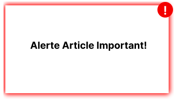
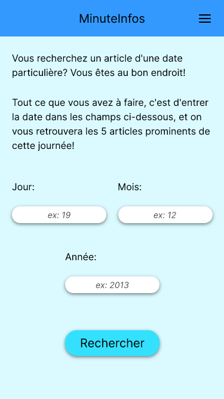
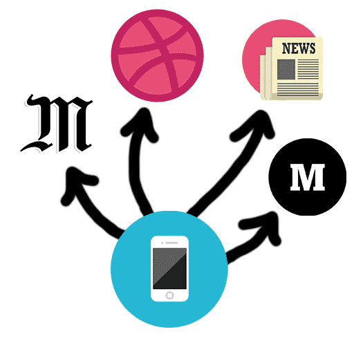

Un condensé d'articles intéressants.
Les informations accessibles en ligne sont si nombreuses qu’il est facile de se perdre dans les doublons. C’est là qu’intervient Minute Infos! On garde pour vous les cinq articles les plus importants de la journée, sélectionnés par leur nombre de visites parmi une liste de sites d'actualités choisie par nos soins, pour un accès rapide à l’essentiel!
Restez informés!
Avec le système d'articles importants, soyez informés en temps réel quand un article prioritaire est ajouté à Minute Infos! C'est simple: ils se démarquent par une bordure rouge!
L'actualité archivée!
La fonction d'archives permet de rechercher par date les articles intéressants pour les retrouver plus facilement. Tout ce que vous avez à faire, c'est d'entrer une date, on se charge du reste!
Intéressé·e? Touchez. Consultez.
Un article retient votre attention? Touchez/cliquez dessus, vous pourrez lire l'article dans son intégralité dans son site d'origine.